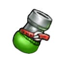
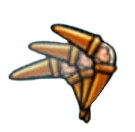
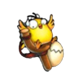
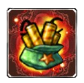
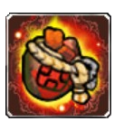
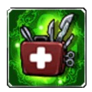
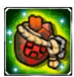
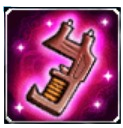
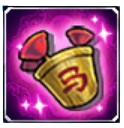

Tipos de Armas
O DDTank possui diversos tipos diferentes de armas, confira agora alguns deles:
Sobre as tipagens:
A tipagem das armas no início do jogo era algo muito importante para definir sua raridade, entretando com o passar dos anos isso deixou de ser algo muito especial.
Ainda assim, vale a pena listá-las.
Uma mesma arma pode possuir várias tipagens e não necessáriamente uma arma de tipagem superior é melhor ou mais rara do que uma arma diferente de tipagem inferior, porém ela sempre será melhor do que uma mesma arma de tipagem inferior.
Ficou um pouco confuso não é? Porém observe o exemplo abaixo para simplificar melhor as coisas:
Um Super Quebra-Tijolos não é superior a um Verdadeiro Bummerang do Amor, porém é lógicamente superior a um Verdadeiro Quebra-Tijolos.
O tipo de arma pode ser definido observando o fundo da sua imagem, possuindo efeitos diferentes para cada classe. O seu poder, o qual aumenta conforme o tipo melhora. E a sua raridade, a qual também aumenta conforme o seu tipo.
São elas:
- Verdadeira
- Super
- Santa
- Luxuosa / Épica
Armas verdadeiras:
O tipo "verdadeiro" é a tipagem mais simples e comum das armas, não apresentando nenhum fundo em sua imagem e sendo o tipo mais simples delas.
Exemplos de armas verdadeiras:



Super armas:
As armas super são um tipo acima das verdadeiras, aumentando considerávelmente o dano e os atributos da arma, além de adicionar um efeito colorido ao seu fundo.
Exemplos de super armas:



Armas santas:
As armas santas são mais fortes ainda do que as super, adicionando mais dano e mais atributos à elas e um fundo com mais efeitos.
Exemplos de armas santas:


